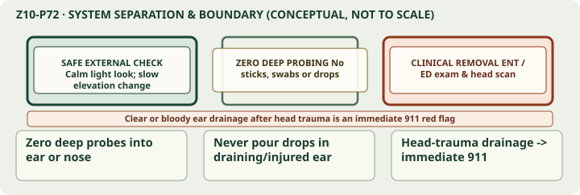

Z10-P72 · Wilderness medicine · New manuscript
Respect lay limits for ear pain, ear/nose foreign objects, and barotrauma
Avoid rupturing eardrums or pushing foreign objects deeper while recognizing inner-ear and sinus red flags.
When it applies · Insects or seeds in ears/noses, elevation-descent ear pressure, or severe ear pain/drainage outdoors.
Equipment · Calm light inspection only (no deep probing) and clinical referral plan.

Actions
- NEVER insert tweezers, sticks, cotton swabs, or improvised probes deep into an ear canal or nostril to dig out a foreign object—blind probing commonly ruptures eardrums or pushes objects deeper into the airway.[M04, M06]
- For painful elevation-change ear pressure (barotrauma), slow descent/ascent, yawn, or swallow gently—never force hard blowing if severe sharp pain occurs; do NOT put random liquids or oils into an ear that has fluid, blood, or suspected eardrum rupture.[M11, M06]
- Seek prompt clinical evaluation for any embedded ear/nose object, blood or clear fluid draining from an ear after head trauma (immediate 911 red flag), severe worsening ear pain with fever, or sudden hearing loss/vertigo.[M11, M06, T02]
Failure recognition · Digging at a pebble or tick inside a child's ear canal with pocketknife tweezers, tearing the eardrum.[M06]
Verify · Confirm zero deep probing occurred, no unapproved drops entered a draining ear, and head-trauma ear drainage triggers immediate 911.[M11, M06]
Stop or change course · Clear/bloody ear drainage after head injury, severe vertigo, facial weakness, or high fever with ear swelling requires urgent emergency care.[M11, T02]
Evidence and editorial notes
- M04 · American Heart Association · 2025 Adult Basic Life Support (2025)
- Section: 10 Adult Foreign-Body Airway Obstruction, sections 10.1–10.3 · Conditions: Responsive adults with mild or severe airway obstruction; separate unresponsive branch
Support: Watch an effective cough. Activate EMS for severe signs and provide trained or dispatcher-directed care. Begin CPR when unresponsive and avoid blind finger sweeps.
Limitations: Infants and children require the pediatric protocol. Pregnancy and inability to encircle the abdomen change thrust technique. · Conflicting evidence: See A02 claim audit for boundaries.
Editorial note: Keeps airway maneuvers bounded by formal training and 911 dispatcher guidance. · Specialist reviewer: EMS and emergency medicine
Primary source · checked 2026-11-25 - M06 · NIH / MedlinePlus · Wounds and Injuries (current web edition)
- Section: Minor Wound Cleaning, Protection, and Infection Red Flags · Conditions: Superficial cuts, scrapes, and abrasions with potable water available
Support: Rinse minor wounds thoroughly with clean potable water, cover with a clean sterile dressing, and monitor for worsening redness, warmth, swelling, pus, red streaks, or fever.
Limitations: Deep punctures, animal bites, retained foreign bodies, or heavily contaminated wounds require clinical evaluation and tetanus review. · Conflicting evidence: None; separates clean potable rinsing from harsh chemical wound scrubbing.
Editorial note: Anchors field wound hygiene and infection escalation cards. · Specialist reviewer: Wilderness medicine and wound care
Primary source · checked 2026-11-24 - M11 · CDC · Symptoms of Mild TBI and Concussion (2025)
- Section: Danger signs in adults; Danger signs in children · Conditions: Head impact or suspected mild brain injury; age matters
Support: Seek emergency care for danger signs such as worsening headache, repeated vomiting, altered behavior or difficulty waking.
Limitations: Spinal precautions, older-adult blood thinners, and return to activity require separate clinical or dispatcher guidance. · Conflicting evidence: See A02 claim audit for boundaries.
Editorial note: Grounds head-trauma, concussion, and spinal-motion-restriction cards. · Specialist reviewer: Neurotrauma and wilderness EMS
Primary source · checked 2026-11-25 - T02 · American Red Cross · First Aid Steps (current web edition)
- Section: First Aid Steps > Call 9-1-1 · Conditions: Lay emergency response to unresponsiveness, abnormal breathing or severe bleeding
Support: Activate EMS and get needed equipment. Follow dispatcher directions and act within training.
Limitations: Remote locations may delay EMS arrival, requiring sustained stabilization after activation. · Conflicting evidence: None; aligns with NPS-E.
Editorial note: Mandates early emergency activation and dispatcher adherence. · Specialist reviewer: EMS and wilderness medicine
Primary source · checked 2026-11-24
Source lineage · NIH MedlinePlus First Aid and Wounds; new manuscript · Classification · New manuscript.